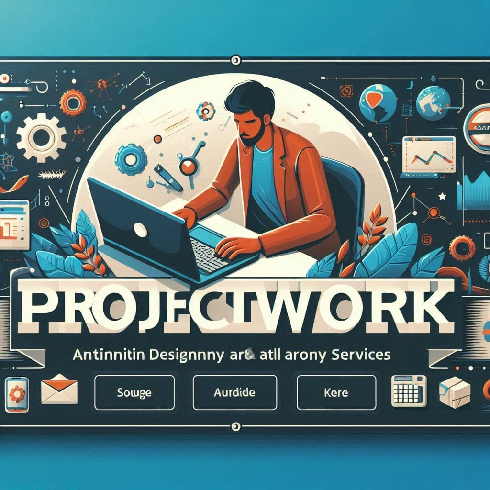

FINAL YEAR PROJECT REASEARCH TOPICS, REVEIW AND DOWNLOAD THOUSANDS OF REASEARCH MATERIALS
i At PROJECT WORK, we are dedicated to supporting students and researchers in their academic pursuits by providing a comprehensive platform for project topics and resources. Whether you are looking for inspiration for your own project, seeking guidance on specific subjects, or interested in exploring a variety of research areas, you have come to the right place! What We Offer: Extensive Project Topics: Our website features a wide range of project topics across various fields of study, including science, technology, engineering, and the arts. Each topic is carefully categorized to help you easily find what you need. Research Resources: We provide access to valuable research materials, including articles, papers, and case studies. These resources can help you deepen your understanding of your chosen topic and inform your project development. Guidelines and Tips: Navigate the project development process with our helpful guidelines and tips. From writing proposals to conducting research and presenting findings, we offer practical advice to enhance your project management skills. Community Support: Join our growing community of students and researchers! Share your experiences, ask questions, and collaborate with others who share your interests. Together, we can foster a supportive learning environment. User-Friendly Interface: Our website is designed to be intuitive and easy to navigate. With a clean layout and organized categories, you can quickly find the information and resources you need. Get Started:

Design and Implementation of an E-Voting System
1.1 Background of study
Focused on creating secure, reliable, and transparent electronic voting systems for elections, especially useful in promoting transparency in local communities and student government elections.
The traditional voting process in Nigeria has often been marred by challenges, including electoral fraud, logistical problems, and low voter turnout. The need for transparency, security, and convenience has led to an increasing interest in electronic voting systems. An e-voting system aims to streamline the voting process, making it easier, faster, and more secure. By leveraging technology, this system can reduce human error and manipulation, thereby fostering greater public trust in the electoral process.